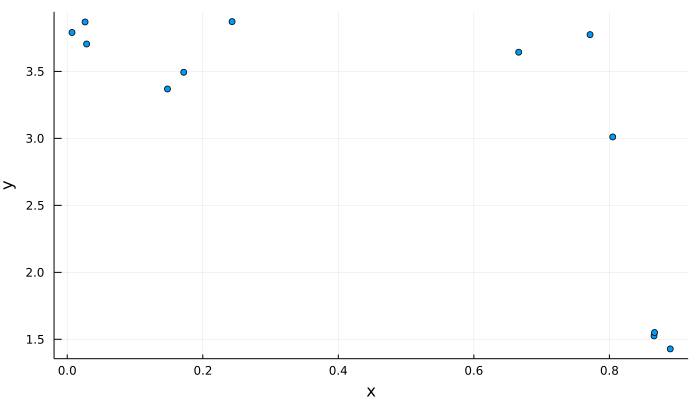
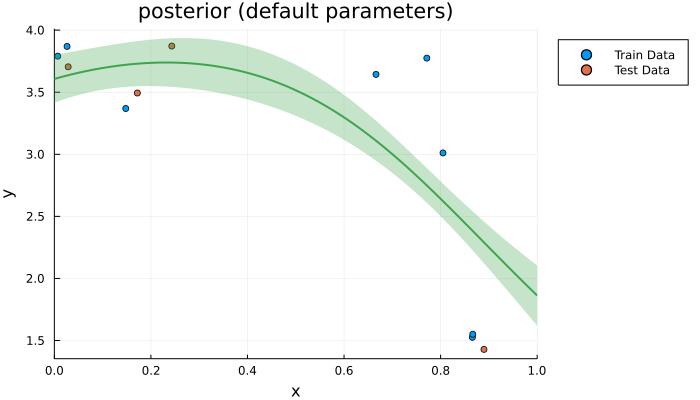
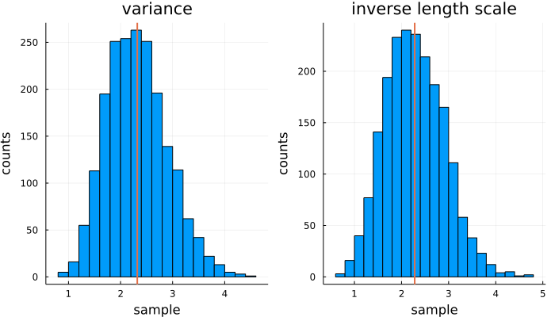
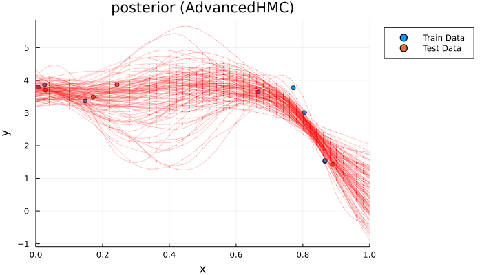
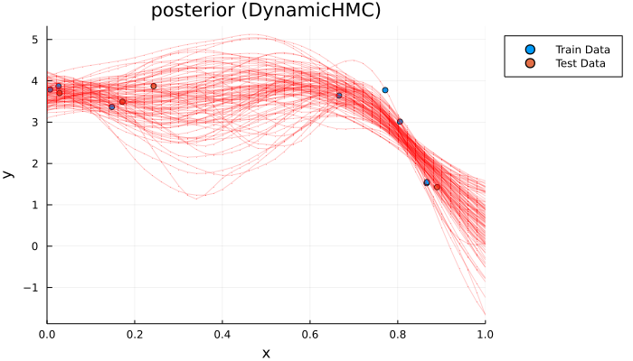
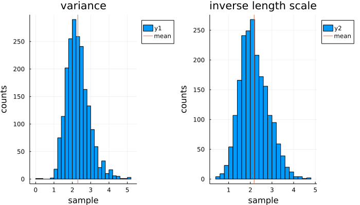
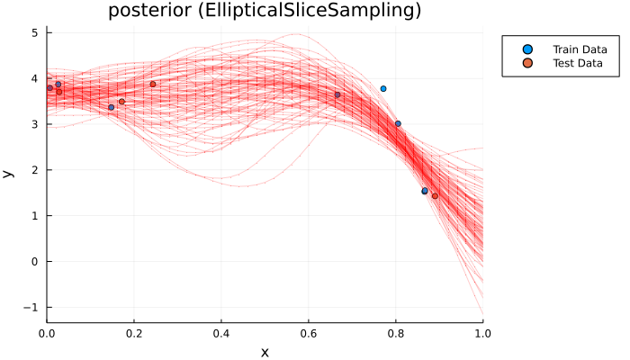
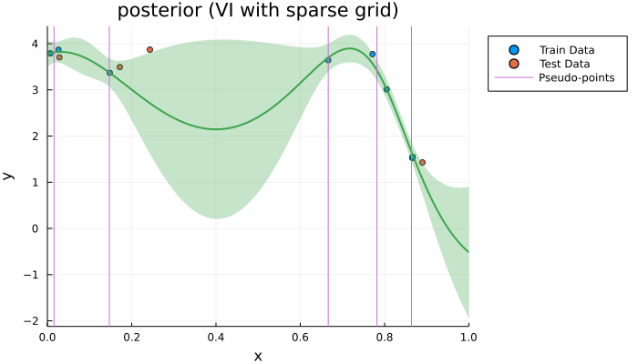
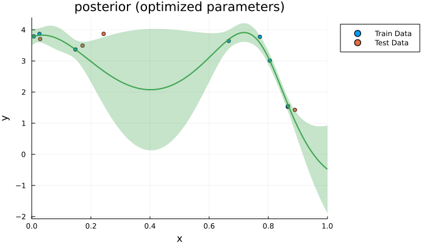

One-dimensional regression

You are seeing the HTML output generated by Documenter.jl and Literate.jl from the Julia source file. The corresponding notebook can be viewed in nbviewer.
Setup
Loading the necessary packages and setting seed.
using AbstractGPs
using Distributions
using StatsFuns
using Plots
default(; legend=:outertopright, size=(700, 400))
using Random
Random.seed!(1234)Load toy regression dataset taken from GPFlow examples.
x = [
0.8658165855998895,
0.6661700880180962,
0.8049218148148531,
0.7714303440386239,
0.14790478354654835,
0.8666105548197428,
0.007044577166530286,
0.026331737288148638,
0.17188596617099916,
0.8897812990554013,
0.24323574561119998,
0.028590102134105955,
]
y = [
1.5255314337144372,
3.6434202968230003,
3.010885733911661,
3.774442382979625,
3.3687639483798324,
1.5506452040608503,
3.790447985799683,
3.8689707574953,
3.4933565751758713,
1.4284538820635841,
3.8715350915692364,
3.7045949061144983,
]
scatter(x, y; xlabel="x", ylabel="y", legend=false)
We split the observations into train and test data.
x_train = x[1:8]
y_train = y[1:8]
x_test = x[9:end]
y_test = y[9:end]We instantiate a Gaussian process with a Matern kernel. The kernel has fixed variance and length scale parameters of default value 1.
f = GP(Matern52Kernel())We create a finite dimentional projection at the inputs of the training dataset observed under Gaussian noise with standard deviation $\sigma = 0.1$, and compute the log-likelihood of the outputs of the training dataset.
fx = f(x_train, 0.1)
logpdf(fx, y_train)-25.53057444906227We compute the posterior Gaussian process given the training data, and calculate the log-likelihood of the test dataset.
p_fx = posterior(fx, y_train)
logpdf(p_fx(x_test), y_test)-232.51565975751606We plot the posterior Gaussian process along with the observations.
scatter(
x_train,
y_train;
xlim=(0, 1),
xlabel="x",
ylabel="y",
title="posterior (default parameters)",
label="Train Data",
)
scatter!(x_test, y_test; label="Test Data")
plot!(0:0.001:1, p_fx; label=false)
Markov Chain Monte Carlo
Previously we computed the log likelihood of the untuned kernel parameters of the GP. We now also perform approximate inference over said kernel parameters using different Markov chain Monte Carlo (MCMC) methods. I.e., we approximate the posterior distribution of the kernel parameters with samples from a Markov chain.
We define a function which returns the log-likelihood of the data for different variance and inverse lengthscale parameters of the Matern kernel. We ensure that these parameters are positive with the softplus function
\[f(x) = \log (1 + \exp x).\]
function gp_loglikelihood(x, y)
function loglikelihood(params)
kernel =
softplus(params[1]) * (Matern52Kernel() ∘ ScaleTransform(softplus(params[2])))
f = GP(kernel)
fx = f(x, 0.1)
return logpdf(fx, y)
end
return loglikelihood
end
const loglik_train = gp_loglikelihood(x_train, y_train)We define a Gaussian prior for the joint distribution of the two transformed kernel parameters. We assume that both parameters are independent with mean 0 and variance 1.
logprior(params) = logpdf(MvNormal(2, 1), params)Hamiltonian Monte Carlo
We start with a Hamiltonian Monte Carlo (HMC) sampler. More precisely, we use the No-U-Turn sampler (NUTS), which is provided by the Julia packages AdvancedHMC.jl and DynamicHMC.jl.
AdvancedHMC
We start with performing inference with AdvancedHMC.
using AdvancedHMC
using ForwardDiffSet the number of samples to draw and warmup iterations.
n_samples = 2_000
n_adapts = 1_000Define a Hamiltonian system of the log joint probability.
logjoint_train(params) = loglik_train(params) + logprior(params)
metric = DiagEuclideanMetric(2)
hamiltonian = Hamiltonian(metric, logjoint_train, ForwardDiff)Define a leapfrog solver, with initial step size chosen heuristically.
initial_params = rand(2)
initial_ϵ = find_good_stepsize(hamiltonian, initial_params)
integrator = Leapfrog(initial_ϵ)Define an HMC sampler, with the following components:
- multinomial sampling scheme,
- generalised No-U-Turn criteria, and
- windowed adaption for step-size and diagonal mass matrix
proposal = NUTS{MultinomialTS,GeneralisedNoUTurn}(integrator)
adaptor = StanHMCAdaptor(MassMatrixAdaptor(metric), StepSizeAdaptor(0.8, integrator))We draw samples from the posterior distribution of kernel parameters. These samples are in the unconstrained space $\mathbb{R}^2$.
samples, _ = sample(
hamiltonian, proposal, initial_params, n_samples, adaptor, n_adapts; progress=false
)┌ Info: Finished 1000 adapation steps
│ adaptor =
│ StanHMCAdaptor(
│ pc=WelfordVar,
│ ssa=NesterovDualAveraging(γ=0.05, t_0=10.0, κ=0.75, δ=0.8, state.ϵ=0.8632215254591531),
│ init_buffer=75, term_buffer=50, window_size=25,
│ state=window(76, 950), window_splits(100, 150, 250, 450, 950)
│ )
│ τ.integrator = Leapfrog(ϵ=0.863)
└ h.metric = DiagEuclideanMetric([0.4205557129728238, 0.4163 ...])
┌ Info: Finished 2000 sampling steps for 1 chains in 1.968339499 (s)
│ h = Hamiltonian(metric=DiagEuclideanMetric([0.4205557129728238, 0.4163 ...]))
│ τ = NUTS{MultinomialTS,Generalised}(integrator=Leapfrog(ϵ=0.863), max_depth=10), Δ_max=1000.0)
│ EBFMI_est = 1.143201310054058
└ average_acceptance_rate = 0.8561286461510924
We transform the samples back to the constrained space and compute the mean of both parameters:
samples_constrained = [map(softplus, p) for p in samples]
mean_samples = mean(samples_constrained)2-element Vector{Float64}:
2.3256789662018496
2.264465149411044We plot a histogram of the samples for the two parameters. The vertical line in each graph indicates the mean of the samples.
histogram(
reduce(hcat, samples_constrained)';
xlabel="sample",
ylabel="counts",
layout=2,
title=["variance" "inverse length scale"],
legend=false,
)
vline!(mean_samples'; linewidth=2)
We approximate the log-likelihood of the test data using the posterior Gaussian processes for kernels with the sampled kernel parameters. We can observe that there is a significant improvement over the log-likelihood of the test data with respect to the posterior Gaussian process with default kernel parameters of value 1.
function gp_posterior(x, y, p)
kernel = softplus(p[1]) * (Matern52Kernel() ∘ ScaleTransform(softplus(p[2])))
f = GP(kernel)
return posterior(f(x, 0.1), y)
end
mean(logpdf(gp_posterior(x_train, y_train, p)(x_test), y_test) for p in samples)-7.681537641632703We sample a function from the posterior GP for the final 100 samples of kernel parameters.
plt = scatter(
x_train,
y_train;
xlim=(0, 1),
xlabel="x",
ylabel="y",
title="posterior (AdvancedHMC)",
label="Train Data",
)
scatter!(plt, x_test, y_test; label="Test Data")
for p in samples[(end - 100):end]
sampleplot!(plt, 0:0.02:1, gp_posterior(x_train, y_train, p))
end
plt
DynamicHMC
We repeat the inference with DynamicHMC. DynamicHMC requires us to implement the LogDensityProblems interface for loglik_train.
using DynamicHMC
using LogDensityProblems
# Log joint density
function LogDensityProblems.logdensity(ℓ::typeof(loglik_train), params)
return ℓ(params) + logprior(params)
end
# The parameter space is two-dimensional
LogDensityProblems.dimension(::typeof(loglik_train)) = 2
# `loglik_train` does not allow to evaluate derivatives of
# the log-likelihood function
function LogDensityProblems.capabilities(::Type{<:typeof(loglik_train)})
return LogDensityProblems.LogDensityOrder{0}()
endNow we can draw samples from the posterior distribution of kernel parameters with DynamicHMC. Again we use ForwardDiff.jl to compute the derivatives of the log joint density with automatic differentiation.
samples =
mcmc_with_warmup(
Random.GLOBAL_RNG,
ADgradient(:ForwardDiff, loglik_train),
n_samples;
reporter=NoProgressReport(),
).chainWe transform the samples back to the constrained space and compute the mean of both parameters:
samples_constrained = [map(softplus, p) for p in samples]
mean_samples = mean(samples_constrained)2-element Vector{Float64}:
2.3213100504593784
2.2796598526163394We plot a histogram of the samples for the two parameters. The vertical line in each graph indicates the mean of the samples.
histogram(
reduce(hcat, samples_constrained)';
xlabel="sample",
ylabel="counts",
layout=2,
title=["variance" "inverse length scale"],
legend=false,
)
vline!(mean_samples'; linewidth=2)Again we can observe that there is a significant improvement over the log-likelihood of the test data with respect to the posterior Gaussian process with default kernel parameters.
mean(logpdf(gp_posterior(x_train, y_train, p)(x_test), y_test) for p in samples)-8.31421172398695We sample a function from the posterior GP for the final 100 samples of kernel parameters.
plt = scatter(
x_train,
y_train;
xlim=(0, 1),
xlabel="x",
ylabel="y",
title="posterior (DynamicHMC)",
label="Train Data",
)
scatter!(plt, x_test, y_test; label="Test Data")
for p in samples[(end - 100):end]
sampleplot!(plt, 0:0.02:1, gp_posterior(x_train, y_train, p))
end
plt
Elliptical slice sampling
Instead of HMC, we use elliptical slice sampling which is provided by the Julia package EllipticalSliceSampling.jl.
using EllipticalSliceSamplingWe draw 2000 samples from the posterior distribution of kernel parameters.
samples = sample(ESSModel(
MvNormal(2, 1), # Gaussian prior
loglik_train,
), ESS(), n_samples; progress=false)We transform the samples back to the constrained space and compute the mean of both parameters:
samples_constrained = [map(softplus, p) for p in samples]
mean_samples = mean(samples_constrained)2-element Vector{Float64}:
2.300877326070935
2.176876054233843We plot a histogram of the samples for the two parameters. The vertical line in each graph indicates the mean of the samples.
histogram(
reduce(hcat, samples_constrained)';
xlabel="sample",
ylabel="counts",
layout=2,
title=["variance" "inverse length scale"],
)
vline!(mean_samples'; layout=2, labels="mean")
Again we can observe that there is a significant improvement over the log-likelihood of the test data with respect to the posterior Gaussian process with default kernel parameters.
mean(logpdf(gp_posterior(x_train, y_train, p)(x_test), y_test) for p in samples)-16.58193064236488We sample a function from the posterior GP for the final 100 samples of kernel parameters.
plt = scatter(
x_train,
y_train;
xlim=(0, 1),
xlabel="x",
ylabel="y",
title="posterior (EllipticalSliceSampling)",
label="Train Data",
)
scatter!(plt, x_test, y_test; label="Test Data")
for p in samples[(end - 100):end]
sampleplot!(plt, 0:0.02:1, gp_posterior(x_train, y_train, p))
end
plt
Variational Inference
Sanity check for the Evidence Lower BOund (ELBO) implemented according to M. K. Titsias's Variational learning of inducing variables in sparse Gaussian processes.
elbo(fx, y_train, f(rand(5)))-25.86916652578844We use the LBFGS algorithm to maximize the given ELBO. It is provided by the Julia package Optim.jl.
using OptimWe define a function which returns the negative ELBO for different variance and inverse lengthscale parameters of the Matern kernel and different pseudo-points. We ensure that the kernel parameters are positive with the softplus function
\[f(x) = \log (1 + \exp x),\]
and that the pseudo-points are in the unit interval $[0,1]$ with the logistic function
\[f(x) = \frac{1}{1 + \exp{(-x)}}.\]
function objective_function(x, y)
function negative_elbo(params)
kernel =
softplus(params[1]) * (Matern52Kernel() ∘ ScaleTransform(softplus(params[2])))
f = GP(kernel)
fx = f(x, 0.1)
z = logistic.(params[3:end])
fz = f(z, 1e-6) # "observing" the latent process with some (small) amount of jitter improves numerical stability
return -elbo(fx, y, fz)
end
return negative_elbo
endWe randomly initialize the kernel parameters and 5 pseudo points, and minimize the negative ELBO with the LBFGS algorithm and obtain the following optimal parameters:
x0 = rand(7)
opt = optimize(objective_function(x_train, y_train), x0, LBFGS()) * Status: success
* Candidate solution
Final objective value: 1.086925e+01
* Found with
Algorithm: L-BFGS
* Convergence measures
|x - x'| = 2.11e-09 ≰ 0.0e+00
|x - x'|/|x'| = 2.52e-10 ≰ 0.0e+00
|f(x) - f(x')| = 0.00e+00 ≤ 0.0e+00
|f(x) - f(x')|/|f(x')| = 0.00e+00 ≤ 0.0e+00
|g(x)| = 9.39e-09 ≤ 1.0e-08
* Work counters
Seconds run: 1 (vs limit Inf)
Iterations: 53
f(x) calls: 138
∇f(x) calls: 138
opt.minimizer7-element Vector{Float64}:
8.379380144211812
3.9327375477933506
1.8479571191117026
0.691710280237785
1.2763097379941533
-1.758326768058792
-4.133679972893883The optimized value of the variance is
softplus(opt.minimizer[1])8.379609670059358and of the inverse lengthscale is
softplus(opt.minimizer[2])3.952138104662189We compute the log-likelihood of the test data for the resulting approximate posterior. We can observe that there is a significant improvement over the log-likelihood with the default kernel parameters of value 1.
opt_kernel =
softplus(opt.minimizer[1]) *
(Matern52Kernel() ∘ ScaleTransform(softplus(opt.minimizer[2])))
opt_f = GP(opt_kernel)
opt_fx = opt_f(x_train, 0.1)
ap = approx_posterior(VFE(), opt_fx, y_train, opt_f(logistic.(opt.minimizer[3:end])))
logpdf(ap(x_test), y_test)-1.0522026774312465We visualize the approximate posterior with optimized parameters.
scatter(
x_train,
y_train;
xlim=(0, 1),
xlabel="x",
ylabel="y",
title="posterior (VI with sparse grid)",
label="Train Data",
)
scatter!(x_test, y_test; label="Test Data")
plot!(0:0.001:1, ap; label=false)
vline!(logistic.(opt.minimizer[3:end]); label="Pseudo-points")
Exact Gaussian Process Inference
Here we use Type-II MLE to train the hyperparameters of the Gaussian process. This means that our loss function is the negative log marginal likelihood.
We re-calculate the log-likelihood of the test dataset with the default kernel parameters of value 1 for the sake of comparison.
logpdf(p_fx(x_test), y_test)-232.51565975751606We define a function which returns the negative log marginal likelihood for different variance and inverse lengthscale parameters of the Matern kernel and different pseudo-points. We ensure that the kernel parameters are positive with the softplus function $f(x) = \log (1 + \exp x)$.
function loss_function(x, y)
function negativelogmarginallikelihood(params)
kernel =
softplus(params[1]) * (Matern52Kernel() ∘ ScaleTransform(softplus(params[2])))
f = GP(kernel)
fx = f(x, 0.1)
return -logpdf(fx, y)
end
return negativelogmarginallikelihood
end
We randomly initialize the kernel parameters, and minimize the negative log marginal likelihood with the LBFGS algorithm and obtain the following optimal parameters:
θ0 = randn(2)
opt = Optim.optimize(loss_function(x_train, y_train), θ0, LBFGS()) * Status: success
* Candidate solution
Final objective value: 1.085252e+01
* Found with
Algorithm: L-BFGS
* Convergence measures
|x - x'| = 1.50e-05 ≰ 0.0e+00
|x - x'|/|x'| = 1.79e-06 ≰ 0.0e+00
|f(x) - f(x')| = 3.91e-12 ≰ 0.0e+00
|f(x) - f(x')|/|f(x')| = 3.60e-13 ≰ 0.0e+00
|g(x)| = 7.02e-10 ≤ 1.0e-08
* Work counters
Seconds run: 0 (vs limit Inf)
Iterations: 13
f(x) calls: 51
∇f(x) calls: 51
opt.minimizer2-element Vector{Float64}:
8.385520557281978
3.9687942115144725The optimized value of the variance is
softplus(opt.minimizer[1])8.385748678224516and of the inverse lengthscale is
softplus(opt.minimizer[2])3.9875141001442764We compute the log-likelihood of the test data for the resulting optimized posterior. We can observe that there is a significant improvement over the log-likelihood with the default kernel parameters of value 1.
opt_kernel =
softplus(opt.minimizer[1]) *
(Matern52Kernel() ∘ ScaleTransform(softplus(opt.minimizer[2])))
opt_f = GP(opt_kernel)
opt_fx = opt_f(x_train, 0.1)
opt_p_fx = posterior(opt_fx, y_train)
logpdf(opt_p_fx(x_test), y_test)-1.084976751507031We visualize the posterior with optimized parameters.
scatter(
x_train,
y_train;
xlim=(0, 1),
xlabel="x",
ylabel="y",
title="posterior (optimized parameters)",
label="Train Data",
)
scatter!(x_test, y_test; label="Test Data")
plot!(0:0.001:1, opt_p_fx; label=false)
This page was generated using Literate.jl.